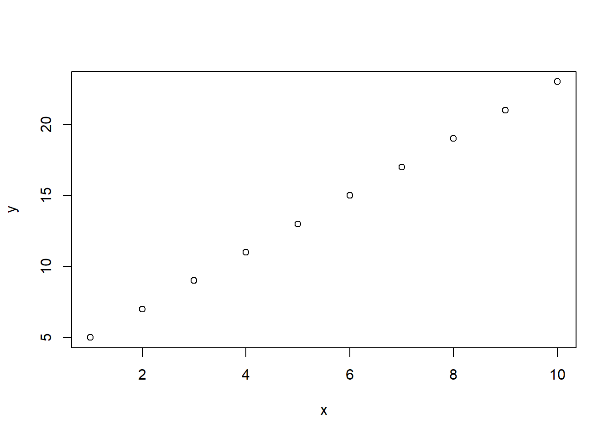
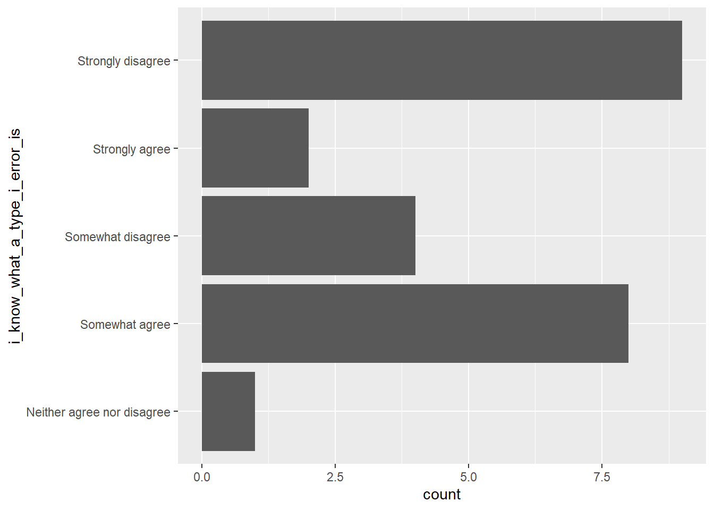
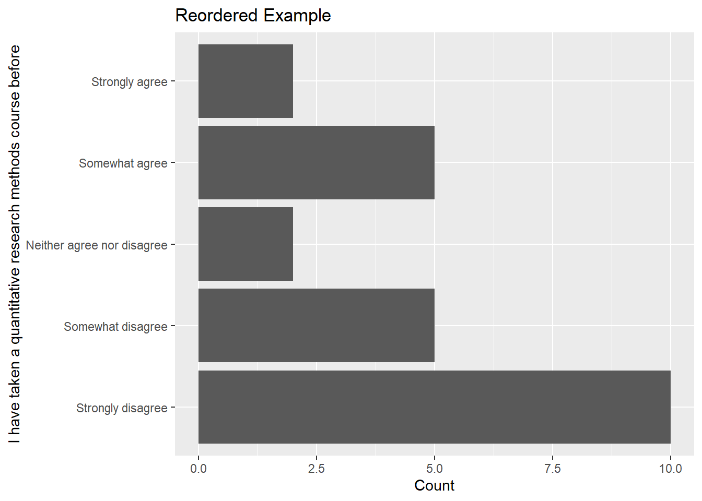
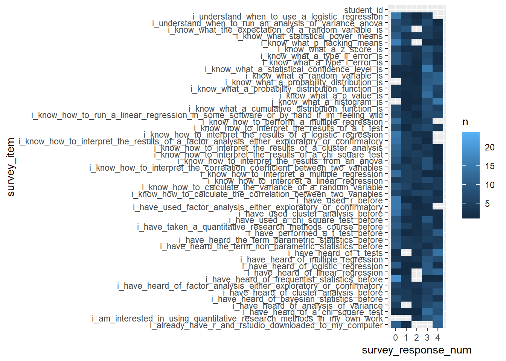

Chapter2 Week 2: Intro stats, Data & Distributions, Intro R & RStudio
This week, we discuss some very basic ideas related to statistics, data, and working in R.
2.1 First steps in R
We can create a new variable by assigning it a value with the <- operator. Let’s create a vector of numbers 1 to 10 with the seq() function and then a separate vector that takes each of the x values, multiplies it by 2, and adds 3.
x <- seq(1:10)
y <- 2* x + 3Just to make sure everything worked as expected, we can then just type x and y and R will print their values. We could also look in the “environment” window to see whether those variables (and their expected values) were actually created.
x## [1] 1 2 3 4 5 6 7 8 9 10y## [1] 5 7 9 11 13 15 17 19 21 23So far, so good. If we want to quickly visualize this, we could create a simple scatter plot with the plot() command (note: we will come back to plotting data much more in week 3).
plot(x, y)
2.2 Getting your R environment set up
One of the first things you will have in any script or .rmd file is a section to load all the libraries that you use in that script.
You can install a library by using the install.packages() function, for example:
install.packages("tidyverse"), install.packages("janitor"), and install.packages("psych")
with this installed, you can then load the package using the library() function
library(tidyverse)
library(janitor)
library(psych)2.3 Reading in data
A good first step when working in R is to check which directory you are working in with the getwd() function. You should get a directory in response.
getwd()## [1] "C:/Users/akatz4/Desktop/test_course_note"You can also check which files are in that directory with list.files().
list.files()## [1] "_book"
## [2] "_bookdown.yml"
## [3] "_bookdown_files"
## [4] "_output.yml"
## [5] "01-Week_01.Rmd"
## [6] "02-Week_02.Rmd"
## [7] "03-Week_03.Rmd"
## [8] "04-application.Rmd"
## [9] "05-summary.Rmd"
## [10] "06-references.Rmd"
## [11] "book.bib"
## [12] "docs"
## [13] "ENGE_5714_2021_pre_survey.csv"
## [14] "Free Reduced Lunch by Schools and Grade Structures 2008-2017_final.csv"
## [15] "index.Rmd"
## [16] "packages.bib"
## [17] "preamble.tex"
## [18] "README.md"
## [19] "style.css"
## [20] "survey_student_info.csv"
## [21] "test_course_note.Rproj"
## [22] "test_course_notes.Rmd"
## [23] "test_course_notes_files"If you notice that the file you are looking for is not there, then you can use setwd() to change your working directory
setwd("./Week 2/")
After that, make sure you have switched to the correct working directory
getwd() and then list.files().
Assuming you have directed yourself to the correct place, you can now read in the file(s) that you want to be working with. There are a lot of ways to do this. Since we will be spending a lot of time in class working with .csv files, we will focus on using the read_csv() function from the readr package (part of the tidyverse collection of packages). This function will read in the .csv file and store the data as a tibble (a tidyverse version of a data frame, which we can think of as a collection of observations stored in rows with values for variables for each observation stored in columns).
prior_survey <- read_csv("ENGE_5714_2021_pre_survey.csv")## Parsed with column specification:
## cols(
## .default = col_character(),
## student_id = col_double()
## )## See spec(...) for full column specifications.2.4 Exploring the data
Now that we have loaded in the data, let’s take a look at the csv. If we just run a line with the name of the tibble - i.e., prior_survey then we should receive a printout that shows the first several rows of that tibble and a listing of all the columns, along with the data types (i.e., double for numeric values, character for strings, etc) of each column.
prior_survey## # A tibble: 24 x 49
## student_id `I have taken a~ `I am intereste~ `I know what a ~ `I know what a ~ `I know what a ~
## <dbl> <chr> <chr> <chr> <chr> <chr>
## 1 1 Somewhat disagr~ Somewhat agree Strongly disagr~ Strongly disagr~ Somewhat disagr~
## 2 2 Strongly disagr~ Neither agree n~ Somewhat agree Somewhat agree Somewhat agree
## 3 3 Strongly disagr~ Somewhat agree Somewhat agree Somewhat agree Somewhat agree
## 4 4 Somewhat disagr~ Strongly agree Strongly disagr~ Strongly disagr~ Somewhat agree
## 5 5 Somewhat agree Strongly agree Somewhat agree Somewhat agree Somewhat agree
## 6 6 Somewhat disagr~ Somewhat agree Somewhat disagr~ Somewhat disagr~ Somewhat agree
## 7 7 Strongly disagr~ Somewhat agree Strongly disagr~ Strongly disagr~ Somewhat agree
## 8 8 Somewhat agree Somewhat agree Somewhat agree Somewhat agree Somewhat agree
## 9 9 Strongly disagr~ Strongly agree Somewhat agree Somewhat agree Strongly agree
## 10 10 Neither agree n~ Strongly agree Somewhat agree Neither agree n~ Somewhat agree
## # ... with 14 more rows, and 43 more variables: `I know what a p value is` <chr>, `I know what p-hacking
## # means` <chr>, `I know what statistical power means` <chr>, `I have heard of frequentist statistics
## # before` <chr>, `I have heard of Bayesian statistics before` <chr>, `I have heard the term "parametric
## # statistics" before` <chr>, `I have heard the term "non-parametric statistics" before` <chr>, `I know
## # what a histogram is.` <chr>, `I know what a probability distribution is.` <chr>, `I know what a
## # random variable is.` <chr>, `I know what a probability distribution function is.` <chr>, `I know what
## # a cumulative distribution function is.` <chr>, `I know what the expectation of a random variable
## # is.` <chr>, `I know how to calculate the variance of a random variable.` <chr>, `I know what a z
## # score is.` <chr>, `I know how to calculate the correlation between two variables.` <chr>, `I know how
## # to interpret the correlation coefficient between two variables` <chr>, `I have heard of linear
## # regression` <chr>, `I know how to run a linear regression (in some software...or by hand, if I'm
## # feeling wild).` <chr>, `I know how to interpret a linear regression.` <chr>, `I have heard of
## # multiple regression` <chr>, `I know how to perform a multiple regression` <chr>, `I know how to
## # interpret a multiple regression` <chr>, `I have heard of logistic regression.` <chr>, `I understand
## # when to use a logistic regression.` <chr>, `I know how to interpret the results of a logistic
## # regression` <chr>, `I have heard of t-tests` <chr>, `I have performed a t-test before` <chr>, `I know
## # how to interpret the results of a t-test` <chr>, `I have heard of Analysis of Variance.` <chr>, `I
## # understand when to run an Analysis of Variance (ANOVA)` <chr>, `I know how to interpret the results
## # from an ANOVA` <chr>, `I have heard of a chi-square test` <chr>, `I have used a chi-square test
## # before` <chr>, `I know how to interpret the results of a chi-square test` <chr>, `I have heard of
## # cluster analysis before` <chr>, `I have used cluster analysis before` <chr>, `I know how to interpret
## # the results of a cluster analysis` <chr>, `I have heard of factor analysis (either exploratory or
## # confirmatory)` <chr>, `I have used factor analysis (either exploratory or confirmatory)` <chr>, `I
## # know how to interpret the results of a factor analysis (either exploratory or confirmatory)` <chr>,
## # `I already have R and Rstudio downloaded to my computer.` <chr>, `I have used R before` <chr>When we do this, we see that there are a bunch of columns that have spaces in their names. This is okay (in the sense that R can handle this), but it can be a little frustrating to work with. Let’s try cleaning the column names with clean_names() from the janitor package. This function will replace the spaces in the column names with underscores and make everything lower case. So, a column name like “I have take a statistics course before” will be changed to “i_have_taken_a_statistics_course_before”.
prior_survey <- prior_survey %>% clean_names() # from janitor packageLook at the data in prior_survey again and see if anything looks different (hint: it should).
prior_survey## # A tibble: 24 x 49
## student_id i_have_taken_a_~ i_am_interested~ i_know_what_a_t~ i_know_what_a_t~ i_know_what_a_s~
## <dbl> <chr> <chr> <chr> <chr> <chr>
## 1 1 Somewhat disagr~ Somewhat agree Strongly disagr~ Strongly disagr~ Somewhat disagr~
## 2 2 Strongly disagr~ Neither agree n~ Somewhat agree Somewhat agree Somewhat agree
## 3 3 Strongly disagr~ Somewhat agree Somewhat agree Somewhat agree Somewhat agree
## 4 4 Somewhat disagr~ Strongly agree Strongly disagr~ Strongly disagr~ Somewhat agree
## 5 5 Somewhat agree Strongly agree Somewhat agree Somewhat agree Somewhat agree
## 6 6 Somewhat disagr~ Somewhat agree Somewhat disagr~ Somewhat disagr~ Somewhat agree
## 7 7 Strongly disagr~ Somewhat agree Strongly disagr~ Strongly disagr~ Somewhat agree
## 8 8 Somewhat agree Somewhat agree Somewhat agree Somewhat agree Somewhat agree
## 9 9 Strongly disagr~ Strongly agree Somewhat agree Somewhat agree Strongly agree
## 10 10 Neither agree n~ Strongly agree Somewhat agree Neither agree n~ Somewhat agree
## # ... with 14 more rows, and 43 more variables: i_know_what_a_p_value_is <chr>,
## # i_know_what_p_hacking_means <chr>, i_know_what_statistical_power_means <chr>,
## # i_have_heard_of_frequentist_statistics_before <chr>,
## # i_have_heard_of_bayesian_statistics_before <chr>,
## # i_have_heard_the_term_parametric_statistics_before <chr>,
## # i_have_heard_the_term_non_parametric_statistics_before <chr>, i_know_what_a_histogram_is <chr>,
## # i_know_what_a_probability_distribution_is <chr>, i_know_what_a_random_variable_is <chr>,
## # i_know_what_a_probability_distribution_function_is <chr>,
## # i_know_what_a_cumulative_distribution_function_is <chr>,
## # i_know_what_the_expectation_of_a_random_variable_is <chr>,
## # i_know_how_to_calculate_the_variance_of_a_random_variable <chr>, i_know_what_a_z_score_is <chr>,
## # i_know_how_to_calculate_the_correlation_between_two_variables <chr>,
## # i_know_how_to_interpret_the_correlation_coefficient_between_two_variables <chr>,
## # i_have_heard_of_linear_regression <chr>,
## # i_know_how_to_run_a_linear_regression_in_some_software_or_by_hand_if_im_feeling_wild <chr>,
## # i_know_how_to_interpret_a_linear_regression <chr>, i_have_heard_of_multiple_regression <chr>,
## # i_know_how_to_perform_a_multiple_regression <chr>,
## # i_know_how_to_interpret_a_multiple_regression <chr>, i_have_heard_of_logistic_regression <chr>,
## # i_understand_when_to_use_a_logistic_regression <chr>,
## # i_know_how_to_interpret_the_results_of_a_logistic_regression <chr>, i_have_heard_of_t_tests <chr>,
## # i_have_performed_a_t_test_before <chr>, i_know_how_to_interpret_the_results_of_a_t_test <chr>,
## # i_have_heard_of_analysis_of_variance <chr>,
## # i_understand_when_to_run_an_analysis_of_variance_anova <chr>,
## # i_know_how_to_interpret_the_results_from_an_anova <chr>, i_have_heard_of_a_chi_square_test <chr>,
## # i_have_used_a_chi_square_test_before <chr>,
## # i_know_how_to_interpret_the_results_of_a_chi_square_test <chr>,
## # i_have_heard_of_cluster_analysis_before <chr>, i_have_used_cluster_analysis_before <chr>,
## # i_know_how_to_interpret_the_results_of_a_cluster_analysis <chr>,
## # i_have_heard_of_factor_analysis_either_exploratory_or_confirmatory <chr>,
## # i_have_used_factor_analysis_either_exploratory_or_confirmatory <chr>,
## # i_know_how_to_interpret_the_results_of_a_factor_analysis_either_exploratory_or_confirmatory <chr>,
## # i_already_have_r_and_rstudio_downloaded_to_my_computer <chr>, i_have_used_r_before <chr>One other function that will we see more in the future is the table() function, which will create a table with the counts of the values for a variable. For example, if we wanted to quickly know how students answered the “I have taken a quantitative research methods course before” question, we can run the following:
table(prior_survey$i_have_taken_a_quantitative_research_methods_course_before)##
## Neither agree nor disagree Somewhat agree Somewhat disagree
## 2 5 5
## Strongly agree Strongly disagree
## 2 102.5 Plotting data
We will discuss plotting more next week, but here is a brief preview of what’s to come…
There are multiple ways to plot data. Focusing on using ggplot, here are two.
The first way passes the prior_survey dataframe explicitly to ggplot
ggplot(data = prior_survey, mapping = aes(x = i_know_what_a_type_i_error_is)) +
geom_bar() +
coord_flip()
The second way does this implicitly, using the pipe operator. Note that the results should be the same.
prior_survey %>%
ggplot(mapping = aes(x = i_know_what_a_type_i_error_is)) +
geom_bar() +
coord_flip()
If we wanted to get extra fancy, we could first convert the data from a wide format to a long format and then start plotting all the items together.
Converting to long format would produce something like this:
prior_survey %>%
gather(key = "survey_item", value = "survey_response")## # A tibble: 1,176 x 2
## survey_item survey_response
## <chr> <chr>
## 1 student_id 1
## 2 student_id 2
## 3 student_id 3
## 4 student_id 4
## 5 student_id 5
## 6 student_id 6
## 7 student_id 7
## 8 student_id 8
## 9 student_id 9
## 10 student_id 10
## # ... with 1,166 more rowsThen we can combine that with the group_by() and summarize() functions and plot the results.
prior_survey %>%
gather(key = "survey_item", value = "survey_response") %>%
group_by(survey_item, survey_response) %>%
summarize(n = n()) %>%
ggplot(mapping = aes(x = survey_response, y = survey_item, fill = n)) +
geom_tile()## `summarise()` regrouping output by 'survey_item' (override with `.groups` argument)
This plot is okay for giving a general sense of what is going on in these plots but there are a bunch of other ways to go about doing this.
First, maybe we want to rename the response categories to a numerical scale. We can accomplish this with a mutate() and case_when().
prior_survey <- prior_survey %>%
gather(key = "survey_item", value = "survey_response") %>%
mutate(survey_response_num = case_when(survey_response == "Strongly disagree" ~ 0,
survey_response == "Somewhat disagree" ~ 1,
survey_response == "Neither agree nor disagree" ~ 2,
survey_response == "Somewhat agree" ~ 3,
survey_response == "Strongly agree" ~ 4,
)) Then we plot the same data but with the numerical scale along the x-axis.
prior_survey %>%
group_by(survey_item, survey_response_num) %>%
summarize(n = n()) %>%
ggplot(mapping = aes(x = survey_response_num, y = survey_item, fill = n)) +
geom_tile()## `summarise()` regrouping output by 'survey_item' (override with `.groups` argument)## Warning: Removed 3 rows containing missing values (geom_tile).